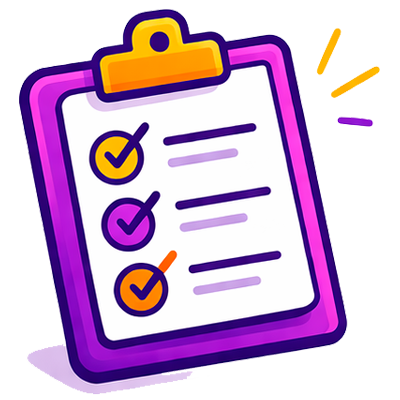
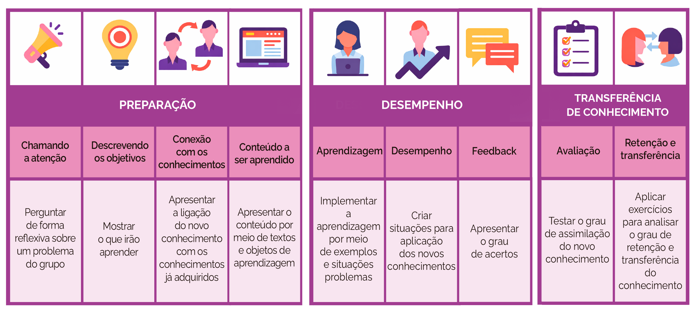

Perfil dos estudantes
Analisar as características e o contexto dos alunos.
Ao final desta aula você poderá:

Conhecer a importância e as etapas do planejamento na produção do material didático para cursos EaD.
Definir o que é uma sequência didática, identificando seus principais componentes e a importância desse conceito no planejamento educacional.
Definir o conceito e conhecer as etapas da transposição didática.
Conhecer a hierarquia de aprendizado de Gagné e como pode influenciar a organização de conteúdos.
Conhecer modelos de sequência didática para material digital.
Ao pensarmos na elaboração de materiais didáticos para um curso a distância, devemos compreender o conceito de EaD. Pelo Decreto nº 12.456/2025, considera-se Educação a Distância a modalidade educacional na qual a mediação didático-pedagógica nos processos de ensino e aprendizagem ocorre com a utilização de meios e tecnologias de informação e comunicação, com pessoal qualificado, com políticas de acesso, com acompanhamento e avaliação compatíveis, entre outros. Igualmente, desenvolve atividades educativas por estudantes e profissionais da educação que estejam em lugares e tempos diversos. (Brasil, 2017) e por isso tem peculiaridades próprias.
Devemos, também, saber quais são as características do estudante que opta por realizar um curso na modalidade EaD. Geralmente, são estudantes adultos que já desempenham vários papéis na sociedade. Eles procuram um curso a distância por questões de flexibilidade do tempo, por terem experiências de estudo que facilitem o alcance de objetivos profissionais e pessoais. Para esses estudantes, os cursos em EaD devem oferecer possuir conteúdos e recursos de apoio que sejam compatíveis e adequados às rotinas de trabalho, entre outras características.
O planejamento educacional é realizado em dois momentos:
Primeiro, a análise das necessidades de aprendizagem acontece com o preenchimento do Projeto Pedagógico do Curso (PPC) por parte da coordenação.
Analisar as características e o contexto dos alunos.
Revisar a ementa para alinhar os conteúdos com os objetivos do curso.
Definir as habilidades e competências que devem ser desenvolvidas.
Referências bibliográficas essenciais e confiáveis para o aprendizado do aluno, e, quando possível, de acesso aberto.
Determinar a quantidade de horas necessárias para cumprir o conteúdo.
Depois, a estruturação do plano instrucional é realizada pelo conteudista ao preencher o Guia da Disciplina.
Organizar o conteúdo em unidades ou módulos de estudo.
Definir os objetivos de aprendizagem a serem alcançados.

Determinar os conteúdos que serão abordados em cada unidade.
Criar atividades e avaliações para verificar a aprendizagem dos alunos.
Selecionar vídeos, textos, áudios, animações, podcasts, infográficos, flashcards, fóruns online, e-books, simuladores, entre outros recursos.
As habilidades e conhecimentos essenciais do conteudista dependem de outro que é fundamental em qualquer processo de ensino: boa transposição didática dos conhecimentos, capaz de garantir a aprendizagem.
Entre os inúmeros desafios que se apresentam nos processos de ensino e aprendizagem, talvez o maior deles seja realizar de maneira eficaz a transposição didática dos conhecimentos científicos para situações reais de ensino, na perspectiva de garantir que os objetivos traçados para o curso, sejam plenamente alcançados.

No ensino presencial, a transposição didática ocorre pela elaboração, pelo uso de materiais e pelo emprego de instrumentos e técnicas (textos, estudos dirigidos, vídeos, roteiros de ensino, proposição de dinâmicas etc.) que apoiam o trabalho do professor em situações de interação quase sempre de maneira síncrona.
A transposição didática é a conversão de conhecimentos científicos historicamente construídos em objetos "ensináveis", isto é, em condições de serem entendidos, aprendidos e ressignificados pelos estudantes.
A transposição didática compreende algumas etapas, como:
Esses pressupostos da transposição didática são potencializados quando as situações de ensino e aprendizagem se efetivam por meio da educação a distância, uma vez que, no modo presencial, alguns dos aspectos são efetivados com mediação presencial do professor e só podem se materializar no ensino e aprendizagem a distância por meio do material didático.
Por causa desses aspectos, a elaboração de material didático para EaD converge para alguns pontos:
Não importa apenas o conteúdo em si, mas a forma como é mediado pedagogicamente dentro de uma proposta pedagógica que vislumbre potencializar a transformação da informação em conhecimento e “[...] o desenvolvimento de habilidades e competências específicas, recorrendo a um conjunto de mídias compatíveis com a proposta e com o contexto socioeconômico do público a ser atendido” (Brasil, 2007, p. 13).
Planejamento é essencial para organizar o conteúdo EaD!
Ao escrever o conteúdo de uma disciplina/unidade/curso, é preciso pensar em mecanismos que promovam aprendizagem significativa. A escrita do conteúdo precisa acontecer de forma lógica, organizada e atrativa para proporcionar maior entendimento e motivação do estudante. É nessa perspectiva que aparece a sequência didática, um termo da educação que define um procedimento encadeando etapas ligadas entre si, com o objetivo de tornar mais eficiente o processo de aprendizado (Zabala, 1998).
Para Guedes (2019), “a sequência didática nada mais é que um conjunto de atividades atrelado ao conteúdo, que busca favorecer a aprendizagem dos estudantes, sempre com o foco nos objetivos já estipulados em seu planejamento”.
Já para Gagné (1974, p. 156), “[...] a importância de se esquematizar a sequência da aprendizagem reside no fato de que esse procedimento nos capacita a evitar erros que originam da omissão de etapas essenciais a um determinado campo do conhecimento”.
Uma vez selecionados criteriosamente os conteúdos, compete ao professor conteudista organizá-los sequencialmente.
Os principais componentes de uma sequência didática são:
A elaboração do material didático deve ser concebida em concordância com a proposta pedagógica do curso. É preciso determinar como o conteúdo será organizado (módulos, blocos e/ou unidades).
Identificar claramente os objetivos educacionais da disciplina e os resultados de aprendizagem esperados. Isso ajudará a orientar o desenvolvimento do conteúdo e das atividades.
Estruturar o conteúdo do curso de forma lógica e sequencial. Dividir o conteúdo em tópicos (módulos ou unidades de acordo com o curso), determinando o que será abordado em cada parte e como esses elementos se relacionam entre si.
Escolher as estratégias de ensino apropriadas para a EaD, como vídeos, textos, atividades interativas, fóruns de discussão, estudos de caso, projetos colaborativos, entre outros. É importante promover interação e participação ativa dos estudantes.
Escolher materiais didáticos adequados, como textos, vídeos, áudios, infográficos, atividades interativas, entre outros. Além disso, criar ou adaptar recursos de aprendizagem que atendam aos objetivos da disciplina. A elaboração de material autoral é uma das opções mais adequadas, para se disponibilizar aos estudantes (folders, cartazes, textos, guias, slides, mapas conceituais/mentais, livretos, esquemas, modelos, gráficos, infográficos, gravuras, desenhos, entre outros). O material didático autoral precisa ser considerado, principalmente, quando o material de um determinado conhecimento for muito extenso.
Definir atividades que engajem os estudantes, promovam interação e apliquem o conhecimento adquirido. Considerar diferentes formatos de avaliação, como testes, trabalhos individuais, projetos práticos, participação em fóruns de discussão, entre outros.
A aprendizagem é definida por Robert Gagné como uma mudança de estado interior que se manifesta por meio de mudança de comportamento e na persistência dessa mudança. A instrução, por sua vez, é a atividade de planejamento e execução de eventos externos com a finalidade de influenciar os processos internos de aprendizagem.
Nessa perspectiva o professor torna-se um “gerente” promotor da aprendizagem por meio da instrução cuja tarefa é planejar, selecionar, delinear e supervisionar a organização de eventos externos com o objetivo de influenciar os processos internos do aprendiz (Moreira, 1999, p. 34).
Gagné sugeriu que as tarefas de aprendizagem para habilidades intelectuais podem ser organizadas em hierarquia, de acordo com a complexidade.
A hierarquia é importante para identificar os pré-requisitos, que devem ser completados para facilitar o aprendizado em cada um dos níveis. As hierarquias de aprendizado fornecem uma base para a sequência de instrução.
Para Gagné, o princípio da aprendizagem está no estímulo para aprender. As tarefas de aprendizagem podem ser organizadas em torno de nove eventos de instrução:
Os quadros a seguir apresentam estruturas de sequência didática, basEaDa nas hierarquias de aprendizado sugeridas por Gagné (1974).
Quadro 1: Estrutura de
sequência didática.
Fonte: Adaptado de
Gagné (1974).

Como estudamos anteriormente, podemos dizer que a sequência didática é uma ferramenta fundamental para você que está participando e/ou criando conteúdo para um curso autoinstrucional online. Ela proporciona uma organização lógica e coerente do conteúdo que o estudante irá aprender, facilitando sua jornada de aprendizado. Ao seguir etapas sequenciais em seu planejamento, você terá a oportunidade de avançar gradualmente, desde o diagnóstico de uma situação até a avaliação de uma intervenção. Essa estrutura não apenas melhora a retenção das informações, mas também permite que o estudante desenvolva habilidades práticas essenciais para aplicar o que aprendeu em contextos reais.
Além disso, a sequência didática oferece a você uma visão clara sobre os objetivos e os resultados que se espera alcançar em cada fase do aprendizado. Em um ambiente online, no qual a interação pode ser mais desafiadora, ter essa organização ajuda a manter engajamento e foco nas atividades de todos os envolvidos. Você poderá aproveitar diferentes métodos e recursos didáticos em cada etapa, como leituras, vídeos, fóruns de discussão e atividades práticas, tornando a experiência ainda mais enriquecedora.
Sequência
Didática - Módulo 1: Educação Financeira
para Jovens e Adultos.
Modalidade: Curso a distância
autoinstrucional.
Público-alvo: Jovens e adultos
(Ensino Médio, EJA ou formação profissional).
Carga horária estimada: 6
horas.
Itens:
Chamando atenção: imagem ou vídeo curto mostrando situações reais de endividamento e planejamento financeiro. Definindo o propósito do módulo: objetivos, metodologia e avaliação.
Desenvolvimento:
Boas-vindas ao módulo
Olá! Seja bem-vindo(a) ao Módulo 1 - Educação Financeira para Jovens e Adultos. Neste módulo você vai:
Vídeo de abertura
Recurso sugerido: vídeo educativo sobre organização financeira pessoal.
Objetivo: aplicar conceitos de educação financeira na organização do orçamento pessoal.
Orientação ao aluno: Assista ao vídeo e reflita: quais hábitos financeiros você já pratica?
Situação-problema: Mariana trabalha, mas nunca consegue economizar. No final do mês, o dinheiro "some" e ela não sabe explicar para onde foi.
Pergunta disparadora: Você sabe exatamente como distribui a sua renda mensal?
Objetivos do módulo
Objetivo geral: Aplicar conceitos de educação financeira na organização do orçamento pessoal.
Objetivos específicos:
Metodologia do Módulo:
Este é um curso autoinstrucional, o que significa que você irá estudar no seu ritmo, com o apoio de materiais autoexplicativos e recursos interativos.
Metodologia:
Avaliação:
Itens:
Relembrando conhecimentos prévios. Processando informações: perguntas objetivas sobre hábitos financeiros. Exercitando habilidades e conhecimentos. Avaliação e feedback.
Desenvolvimento:
Quiz Diagnóstico: o que você
já sabe?
Quiz
interativo com feedback automático
para ativar conhecimentos prévios e
gerar curiosidade sobre o conteúdo.
Conceituando: Fundamentos da
Educação Financeira
Texto autoexplicativo com exemplos
práticos.
Conteúdos abordados:
Estudo de caso
interativo
Caso real:
João recebe R$ 2.500 por mês e gasta
R$ 2.800. Usa cartão de crédito para
cobrir diferenças.
Perguntas orientadoras:
Mãos à obra: desafio prático
Elaborar um Planejamento Financeiro Pessoal Simplificado, contendo lista de receitas, lista de despesas, meta financeira e estratégias de economia.
Formato: planilha, documento digital ou print de aplicativo.
Autoavaliação Reflexiva
Formulário com perguntas abertas e fechadas:
Quiz Final
5
questões objetivas com feedback
automático.
Itens:
Revisão dos conteúdos. Remotivação: finalizar com a revisão do que foi visto no módulo e fazer a "remotivação" para o próximo. Parabéns! Você concluiu o Módulo 1...
Desenvolvimento:
Revisando Juntos
Vídeo resumo com os principais
conceitos. Mapa mental final
downloadável.
Encerramento e
Remotivação
Parabéns! Você concluiu o Módulo 1 -
Educação Financeira para Jovens e
Adultos. Continue sua jornada e
prepare-se para o Módulo 2:
Investimentos básicos e estratégias
para construção de patrimônio.
Nesta aula você aprendeu que o planejamento educacional é uma etapa fundamental na produção do material didático para cursos a distância (EaD). Ele ajuda a organizar o material didático e a garantir a qualidade do ensino. A transposição didática é o processo de transformar o conhecimento científico para que seja transmitido de forma acessível aos alunos.
A sequência didática tem papel importante na produção do material didático, pois a escrita do conteúdo precisa acontecer de forma lógica, organizada e atrativa para proporcionar maior entendimento e motivação do estudante.
No ensino a distância (EaD), a sequência didática pode ser construída com o uso de objetos digitais de aprendizagem (e-books, imagens digitais, podcasts, vídeos on-line, portais de conteúdo, simulações, softwares, jogos digitais, infográficos, flashcards), tornando a experiência de aprendizagem mais atrativa e engajante.
Por fim, a hierarquia de aprendizagem de Gagné é importante porque ajuda a identificar os pré-requisitos necessários a fim de que o aprendizado seja mais fácil. Ela também serve como base para a sequência de ensino.
Objetivo: Definir o conceito de transposição didática.
Qual das alternativas melhor representa a transposição didática no contexto da produção de material didático para EaD?
Objetivo: Identificar os principais componentes de sequência didática e a importância desse conceito no planejamento educacional.
Assinale a alternativa que corresponde corretamente a um componente fundamental da sequência didática na EaD: